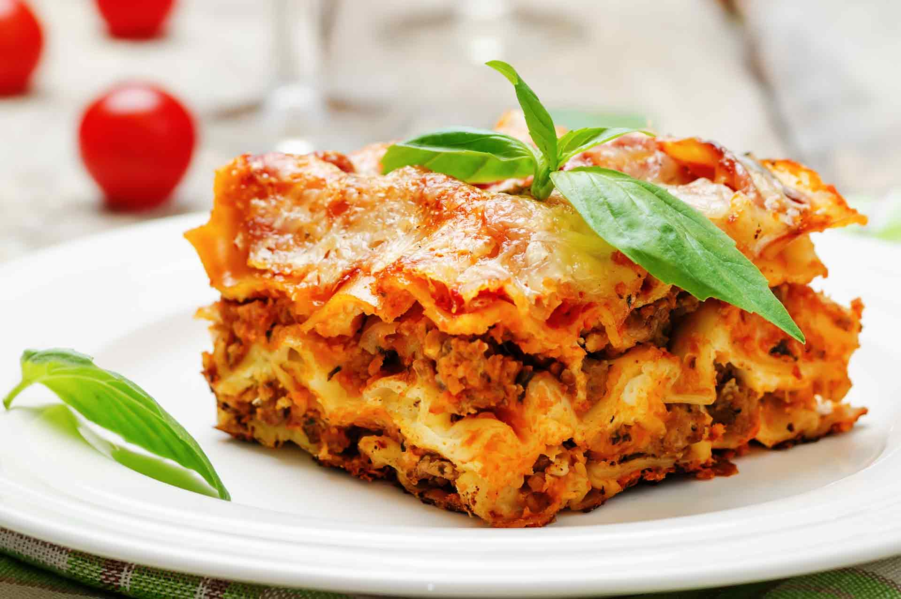

Lasagne

Description
This is my grandma's famous recipe, except that I use sour cream instead of the traditional cheeses (a trick I picked up from my mother-in-law).
She always made it for birthday dinners and special occasions.
This makes a large amount.
I halve it when making it for my boyfriend and myself. It's very cheesy - sometimes I add a little extra tomato sauce. Enjoy!
Ingredients
- 1 (8 ounce) package lasagna noodles
- ½ pound ground pork sausage
- ½ pound ground beef
- 1 clove garlic, minced
- 1 (28 ounce) can diced tomatoes
- 1 (8 ounce) can tomato sauce
- 1 tablespoon dried parsley
- ½ teaspoon dried basil
- ½ teaspoon dried oregano
- 1 pinch white sugar
- 1 (16 ounce) container sour cream
- 3 eggs, lightly beaten
- ¾ cup grated Parmesan cheese
- ½ cup chopped pitted green olives
- 2 teaspoons salt
- ¼ teaspoon ground black pepper
- 2 (12 ounce) packages shredded mozzarella cheese, divided
Steps
-
Heat the oil in a large saucepan. Add the onions and saute for 3 minutes. Add the peppers and saute for 2 minutes.
Add the zucchini and saute 3 minutes before adding the tomatoes, tomato paste, garlic and oregano, basil, thyme, salt and pepper.
Cover the saucepan and simmer for 20 to 30 minutes (the longer the better as long as the sauce is not sticky.)
-
Preheat the oven to 200 degrees F (95 degrees C). Grease a 9x13 inch baking dish.
-
While the sauce cooks, melt 2 tablespoons butter in a saucepan. Add the flour into the butter, stir vigorously for 2 minutes.
Gradually add the milk, stirring until the sauce thickens.
Stir in the cheese, reserving as much as you will want to sprinkle on top of the lasagna.
Stir the cheese into the flour and butter mixture until it has melted completely. Season with nutmeg, salt, and pepper.
-
Soak the lasagna noodles in water for 30 seconds.
-
Cover the bottom of the prepared dish with some of the tomato sauce, followed by a layer of the lasagna sheet, and the cheese sauce.
Continue layering these ingredients ending with a layer of cheese sauce.
Sprinkle the final layer of cheese sauce with nutmeg, salt, pepper, and the reserved cheese.
-
Bake the lasagna 40 to 50 minutes, until the top of the lasagna is golden brown.